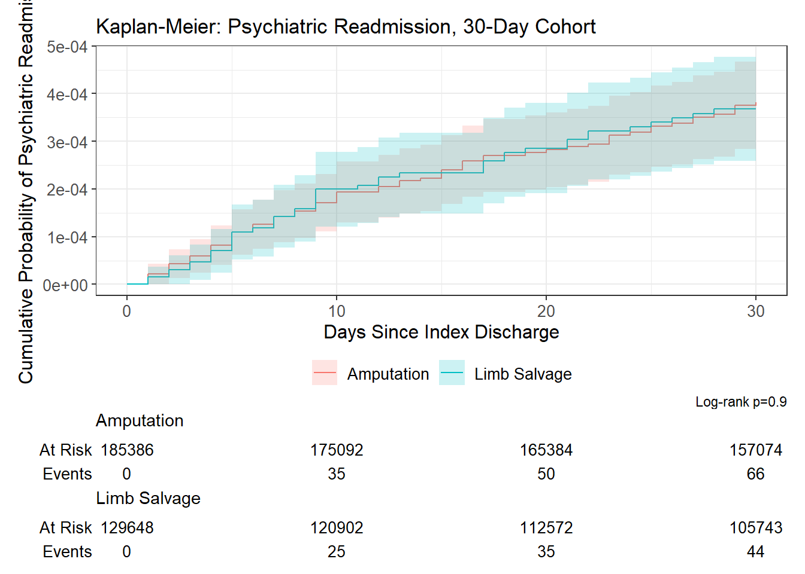
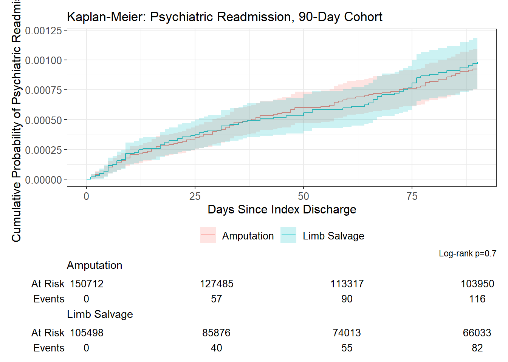

![]()
| Characteristic | Amputation Weighted N = 344,685; Unweighted n = 1853861 | Limb Salvage Weighted N = 238,453; Unweighted n = 1296481 | p-value2 |
|---|---|---|---|
| Age (years) | 60 (52, 68) | 59 (50, 67) | <0.001 |
| Sex | <0.001 | ||
| Female | 89,089 (25.8%) | 71,023 (29.8%) | |
| Male | 255,596 (74.2%) | 167,430 (70.2%) | |
| Primary Expected Payer | <0.001 | ||
| Medicaid | 64,716 (18.8%) | 47,314 (19.9%) | |
| Medicare | 177,219 (51.5%) | 121,459 (51.0%) | |
| Other/no charge | 9,959 (2.9%) | 6,507 (2.7%) | |
| Private | 79,341 (23.1%) | 55,066 (23.1%) | |
| Self-pay | 12,953 (3.8%) | 7,771 (3.3%) | |
| Median Household Income Quartile (ZIP) | <0.001 | ||
| 0-25th percentile | 114,091 (33.1%) | 77,851 (32.6%) | |
| 26th to 50th percentile | 99,771 (28.9%) | 67,880 (28.5%) | |
| 51st to 75th percentile | 78,753 (22.8%) | 53,885 (22.6%) | |
| 76th to 100th percentile | 47,618 (13.8%) | 36,026 (15.1%) | |
| Missing | 4,453 (1.3%) | 2,811 (1.2%) | |
| Admission Day | <0.001 | ||
| Weekday (Mon-Fri) | 286,123 (83.0%) | 193,990 (81.4%) | |
| Weekend (Sat-Sun) | 58,561 (17.0%) | 44,462 (18.6%) | |
| Elective vs. Non-Elective Admission | <0.001 | ||
| Elective | 36,294 (10.5%) | 20,497 (8.6%) | |
| Non-Elective | 307,993 (89.5%) | 217,629 (91.4%) | |
| Hospital Bed Size | <0.001 | ||
| Large | 188,179 (54.6%) | 123,701 (51.9%) | |
| Medium | 92,931 (27.0%) | 67,190 (28.2%) | |
| Small | 63,575 (18.4%) | 47,562 (19.9%) | |
| Hospital Location / Teaching Status | <0.001 | ||
| Metropolitan, non-teaching | 65,661 (19.0%) | 50,361 (21.1%) | |
| Metropolitan, teaching | 254,658 (73.9%) | 168,741 (70.8%) | |
| Non-metropolitan | 24,366 (7.1%) | 19,351 (8.1%) | |
| Discharge Year | <0.001 | ||
| 2016 | 32,897 (9.5%) | 25,284 (10.6%) | |
| 2017 | 43,192 (12.5%) | 32,554 (13.7%) | |
| 2018 | 49,560 (14.4%) | 35,546 (14.9%) | |
| 2019 | 54,237 (15.7%) | 37,840 (15.9%) | |
| 2020 | 51,724 (15.0%) | 34,626 (14.5%) | |
| 2021 | 54,439 (15.8%) | 35,576 (14.9%) | |
| 2022 | 58,636 (17.0%) | 37,027 (15.5%) | |
| Index Length of Stay (days) | 8 (5, 12) | 7 (4, 10) | <0.001 |
| Non-Home Discharge at Index | <0.001 | ||
| Home | 237,879 (69.0%) | 174,206 (73.1%) | |
| Non-home | 106,806 (31.0%) | 64,247 (26.9%) | |
| Chronic Kidney Disease / End-Stage Renal Disease | 141,502 (41.1%) | 97,520 (40.9%) | 0.5 |
| Peripheral Arterial Disease | 70,365 (20.4%) | 32,543 (13.6%) | <0.001 |
| Coronary Artery Disease | 107,313 (31.1%) | 67,434 (28.3%) | <0.001 |
| Pre-Existing Psychiatric Diagnosis (Index Stay) | 79,282 (23.0%) | 54,587 (22.9%) | 0.5 |
| Substance Use Disorder (Alcohol/Drug) | 29,412 (8.5%) | 20,542 (8.6%) | 0.5 |
| 1 Weighted N = nationally representative estimate (DISCWT survey weights), pooled 2016-2022. Unweighted n = actual NRD sample size. Categorical: n (weighted %); continuous: median (IQR). P-values: design-based chi-square (categorical) or survey t-test (continuous). – denotes suppressed cells (n < 11) per HCUP guidelines. | |||
| 2 Design-based t-test; Pearson’s X²: Rao & Scott adjustment | |||
Thirty- and Ninety-Day Readmissions for Depression and Suicide Attempt Following Amputation versus Limb Salvage Procedures in Patients with Neuropathic Diabetic Foot Ulcer
NRD C12 — Nationwide Readmissions Database, 2016–2022
Preamble
- Reference Studies:
Objective. Diabetic foot ulcers requiring surgical management follow one of two divergent paths, limb salvage (excisional debridement of nonviable skin, subcutaneous tissue, muscle, or bone) or amputation, yet the short-term psychiatric consequences of these two approaches remain poorly characterized at a national level. This study estimates the 30-day and 90-day risk of unplanned, non-elective readmission for depression or suicide attempt among patients with a neuropathic diabetic foot ulcer undergoing amputation compared to limb salvage, and characterizes the causes and outcomes of those readmissions.
Data source. This study used the 2016–2022 Nationwide Readmissions Database (NRD), sponsored by the Agency for Healthcare Research and Quality’s Healthcare Cost and Utilization Project (HCUP). The NRD is a nationally representative, all-payer database of U.S. hospital discharges that permits tracking of a patient’s readmissions to any hospital within the same state across a calendar year.
Study population. Adults (age ≥ 18 years) with a neuropathic diabetic foot ulcer (diabetes with foot ulcer and diabetic neuropathy, both present on the index stay) who underwent either an amputation or a limb-salvage/excisional-debridement procedure during that stay were included. In-hospital deaths during the index admission were excluded. Index discharges too close to the end of the calendar year to permit a complete follow-up window were excluded from each arm separately (December for the 30-day arm; October–December for the 90-day arm), since readmission linkage is only possible within a calendar year.
Exposure. Patients were classified as Amputation if any major (above- or below-knee) or minor (foot or toe) amputation procedure code was present on the index stay, or Limb Salvage if excisional debridement (skin, subcutaneous tissue/fascia, muscle, or bone) was performed without any amputation code. Patients with both an amputation and an excisional debridement code on the same index stay were classified as Amputation, since concurrent debridement in that context reflects wound-bed preparation as part of the amputation rather than an independent limb-salvage attempt.
Primary outcomes. Unplanned (non-elective) readmission within 30 days and within 90 days of index discharge with a diagnosis of depression or suicide attempt, analyzed as two separate arms. Depression (ICD-10-CM F32.x/F33.x, excluding F32.81 premenstrual dysphoric disorder) was required in the principal diagnosis position of the readmission. Suicide attempt (T14.91XA initial encounter, T14.91XD subsequent encounter) was accepted in any diagnosis position, since ICD-10-CM sequencing convention typically codes suicide-attempt intent as a secondary diagnosis to the associated injury or poisoning principal diagnosis. Consistent with standard readmission-outcome attribution, only the first unplanned readmission within each window was used to characterize the reason for readmission.
Secondary outcomes. Among patients who were readmitted: in-hospital mortality, length of stay and inflation-adjusted cost at the readmission encounter, non-home discharge at readmission, and the top principal diagnoses driving readmission overall. Non-home discharge at the index admission was examined as a secondary marker of discharge-state fragility.
Cost. Hospital costs were estimated by applying HCUP hospital-specific cost-to-charge ratios to reported charges, then adjusting to 2022 dollars using the Consumer Price Index medical-care component. All reported dollar figures represent estimated hospital costs, not billed charges.
Statistical analysis. All estimates accounted for the NRD’s complex survey design (discharge weights, hospital-level clustering, and stratification), pooled across the full 2016–2022 study period as a single national estimate for that period. Because NRD strata and hospital identifiers reset each year, the design used year-qualified strata (interaction of YEAR and NRD_STRATUM) and year-qualified primary sampling units (interaction of YEAR and HOSP_NRD), with DISCWT weights and a nested design; survey.lonely.psu = "adjust" was set before the design was built. Baseline characteristics were compared between Amputation and Limb Salvage patients using weighted medians (interquartile range) for continuous variables and weighted counts (percentages) for categorical variables, with design-based chi-square tests for categorical variables and survey t-tests for continuous variables. The unadjusted cumulative incidence of psychiatric readmission was visualized using Kaplan-Meier curves with a log-rank test for equality across exposure groups, prior to adjusted modeling. Independent predictors of 30-day and 90-day psychiatric readmission were each estimated with a separate survey-weighted logistic (quasibinomial) model, adjusting for exposure group, demographic and hospital covariates, and comorbidities; adjusted odds ratios with 95% confidence intervals are reported. Readmission diagnoses were ranked by weighted frequency using raw ICD-10-CM principal diagnosis codes. Readmission mortality and discharge disposition were compared between groups with design-based chi-square tests; length of stay and inflation-adjusted cost at readmission were compared as weighted medians. Consistent with HCUP data-use guidance, estimates based on fewer than 11 unweighted discharges are not reported.
Table 1 — Baseline Characteristics by Exposure Group
| Characteristic | Amputation Weighted N = 280,219; Unweighted n = 1507121 | Limb Salvage Weighted N = 194,010; Unweighted n = 1054981 | p-value2 |
|---|---|---|---|
| Age (years) | 60 (52, 68) | 59 (50, 67) | <0.001 |
| Sex | <0.001 | ||
| Female | 72,681 (25.9%) | 57,613 (29.7%) | |
| Male | 207,539 (74.1%) | 136,397 (70.3%) | |
| Primary Expected Payer | <0.001 | ||
| Medicaid | 52,302 (18.7%) | 38,281 (19.8%) | |
| Medicare | 144,670 (51.7%) | 98,845 (51.0%) | |
| Other/no charge | 8,038 (2.9%) | 5,294 (2.7%) | |
| Private | 64,329 (23.0%) | 45,064 (23.3%) | |
| Self-pay | 10,492 (3.7%) | 6,260 (3.2%) | |
| Median Household Income Quartile (ZIP) | <0.001 | ||
| 0-25th percentile | 92,876 (33.1%) | 63,484 (32.7%) | |
| 26th to 50th percentile | 80,984 (28.9%) | 55,042 (28.4%) | |
| 51st to 75th percentile | 64,077 (22.9%) | 43,580 (22.5%) | |
| 76th to 100th percentile | 38,676 (13.8%) | 29,595 (15.3%) | |
| Missing | 3,606 (1.3%) | 2,309 (1.2%) | |
| Admission Day | <0.001 | ||
| Weekday (Mon-Fri) | 232,699 (83.0%) | 157,772 (81.3%) | |
| Weekend (Sat-Sun) | 47,519 (17.0%) | 36,237 (18.7%) | |
| Elective vs. Non-Elective Admission | <0.001 | ||
| Elective | 29,755 (10.6%) | 16,665 (8.6%) | |
| Non-Elective | 250,133 (89.4%) | 177,064 (91.4%) | |
| Hospital Bed Size | <0.001 | ||
| Large | 153,047 (54.6%) | 100,501 (51.8%) | |
| Medium | 75,340 (26.9%) | 54,944 (28.3%) | |
| Small | 51,833 (18.5%) | 38,565 (19.9%) | |
| Hospital Location / Teaching Status | <0.001 | ||
| Metropolitan, non-teaching | 53,114 (19.0%) | 40,912 (21.1%) | |
| Metropolitan, teaching | 207,206 (73.9%) | 137,272 (70.8%) | |
| Non-metropolitan | 19,899 (7.1%) | 15,826 (8.2%) | |
| Discharge Year | <0.001 | ||
| 2016 | 25,951 (9.3%) | 20,070 (10.3%) | |
| 2017 | 34,913 (12.5%) | 26,621 (13.7%) | |
| 2018 | 40,326 (14.4%) | 28,828 (14.9%) | |
| 2019 | 44,314 (15.8%) | 30,891 (15.9%) | |
| 2020 | 42,473 (15.2%) | 28,450 (14.7%) | |
| 2021 | 44,622 (15.9%) | 29,101 (15.0%) | |
| 2022 | 47,621 (17.0%) | 30,048 (15.5%) | |
| Index Length of Stay (days) | 8 (5, 12) | 7 (4, 10) | <0.001 |
| Non-Home Discharge at Index | <0.001 | ||
| Home | 193,134 (68.9%) | 141,614 (73.0%) | |
| Non-home | 87,085 (31.1%) | 52,396 (27.0%) | |
| Chronic Kidney Disease / End-Stage Renal Disease | 115,238 (41.1%) | 79,644 (41.1%) | 0.7 |
| Peripheral Arterial Disease | 57,977 (20.7%) | 26,860 (13.8%) | <0.001 |
| Coronary Artery Disease | 87,584 (31.3%) | 55,003 (28.4%) | <0.001 |
| Pre-Existing Psychiatric Diagnosis (Index Stay) | 64,396 (23.0%) | 44,355 (22.9%) | 0.5 |
| Substance Use Disorder (Alcohol/Drug) | 23,842 (8.5%) | 16,749 (8.6%) | 0.3 |
| 1 Weighted N = nationally representative estimate (DISCWT survey weights), pooled 2016-2022. Unweighted n = actual NRD sample size. Categorical: n (weighted %); continuous: median (IQR). P-values: design-based chi-square (categorical) or survey t-test (continuous). – denotes suppressed cells (n < 11) per HCUP guidelines. | |||
| 2 Design-based t-test; Pearson’s X²: Rao & Scott adjustment | |||
Table 2 — Cause of Readmission (Top 10 Principal Diagnoses)
| Table 2a. Top 10 Principal Diagnoses at 30 Day Readmission | |||||
| Principal Dx (ICD-10-CM) | Diagnosis | Weighted % | Unweighted n | Amputation | Limb Salvage |
|---|---|---|---|---|---|
| E1169 | Type 2 diabetes mellitus with other specified complication | 9.2% | 4929 | 6.7% | 12.1% |
| A419 | Sepsis, unspecified organism | 9.1% | 4953 | 8.3% | 10.0% |
| E11621 | Type 2 diabetes mellitus with foot ulcer | 5.4% | 2881 | 2.5% | 8.8% |
| E1152 | Type 2 diabetes mellitus with diabetic peripheral angiopathy with gangrene | 4.9% | 2715 | 5.3% | 4.4% |
| I130 | Hypertensive heart and chronic kidney disease with heart failure and stage 1 through stage 4 chronic kidney disease, or unspecified chronic kidney disease | 3.5% | 1804 | 3.3% | 3.7% |
| T8743 | Infection of amputation stump, right lower extremity | 3.4% | 1794 | 5.6% | 0.7% |
| T8744 | Infection of amputation stump, left lower extremity | 3.3% | 1744 | 5.4% | 0.8% |
| N179 | Acute kidney failure, unspecified | 3.1% | 1646 | 2.9% | 3.4% |
| T8781 | Dehiscence of amputation stump | 2.4% | 1246 | 4.1% | 0.3% |
| I110 | Hypertensive heart disease with heart failure | 1.5% | 769 | 1.5% | 1.4% |
| Table 2b. Top 10 Principal Diagnoses at 90 Day Readmission | |||||
| Principal Dx (ICD-10-CM) | Diagnosis | Weighted % | Unweighted n | Amputation | Limb Salvage |
|---|---|---|---|---|---|
| E1169 | Type 2 diabetes mellitus with other specified complication | 11.7% | 10245 | 10.0% | 13.8% |
| A419 | Sepsis, unspecified organism | 9.8% | 8645 | 9.0% | 10.8% |
| E11621 | Type 2 diabetes mellitus with foot ulcer | 6.5% | 5686 | 3.9% | 9.8% |
| E1152 | Type 2 diabetes mellitus with diabetic peripheral angiopathy with gangrene | 4.7% | 4260 | 5.3% | 4.0% |
| T8743 | Infection of amputation stump, right lower extremity | 3.1% | 2687 | 5.1% | 0.7% |
| T8744 | Infection of amputation stump, left lower extremity | 3.0% | 2558 | 4.8% | 0.7% |
| I130 | Hypertensive heart and chronic kidney disease with heart failure and stage 1 through stage 4 chronic kidney disease, or unspecified chronic kidney disease | 2.8% | 2397 | 2.7% | 2.9% |
| N179 | Acute kidney failure, unspecified | 2.6% | 2177 | 2.4% | 2.8% |
| T8781 | Dehiscence of amputation stump | 1.8% | 1582 | 3.1% | 0.2% |
| E11628 | Type 2 diabetes mellitus with other skin complications | 1.4% | 1176 | 1.1% | 1.7% |
Primary Outcome: Psychiatric Readmission by Exposure Group
| Primary Outcome: Psychiatric Readmission by Exposure Group, 30-Day Cohort | |||||||
| Exposure Group | Raw n (unweighted) | Total Unweighted N | Raw % | Weighted N | Total Weighted N | Weighted % | Meets HCUP >=11 threshold? |
|---|---|---|---|---|---|---|---|
| Amputation | 66 | 185386 | 0.04% | 127 | 344685 | 0.04% | Yes |
| Limb Salvage | 44 | 129648 | 0.03% | 86 | 238453 | 0.04% | Yes |
| Primary Outcome: Psychiatric Readmission by Exposure Group, 90-Day Cohort | |||||||
| Exposure Group | Raw n (unweighted) | Total Unweighted N | Raw % | Weighted N | Total Weighted N | Weighted % | Meets HCUP >=11 threshold? |
|---|---|---|---|---|---|---|---|
| Amputation | 116 | 150712 | 0.08% | 225 | 280219 | 0.08% | Yes |
| Limb Salvage | 82 | 105498 | 0.08% | 157 | 194010 | 0.08% | Yes |


Table 3 — Adjusted Predictors of Psychiatric Readmission
| Characteristic1 | OR1 | 95% CI1 | p-value1 |
|---|---|---|---|
| Exposure Group | |||
| Limb Salvage | — | — | |
| Amputation | 1.04 | 0.69, 1.57 | 0.9 |
| Age (years) | 0.98 | 0.96, 1.00 | 0.035 |
| Sex | |||
| Female | — | — | |
| Male | 1.07 | 0.65, 1.74 | 0.8 |
| Primary Expected Payer | |||
| Medicaid | — | — | |
| Medicare | 0.72 | 0.46, 1.13 | 0.2 |
| Other/no charge | 0.50 | 0.11, 2.18 | 0.4 |
| Private | 0.35 | 0.16, 0.75 | 0.007 |
| Self-pay | 1.21 | 0.45, 3.23 | 0.7 |
| Median Household Income Quartile (ZIP) | |||
| 0-25th percentile | — | — | |
| 26th to 50th percentile | 0.99 | 0.61, 1.60 | >0.9 |
| 51st to 75th percentile | 0.80 | 0.46, 1.38 | 0.4 |
| 76th to 100th percentile | 0.74 | 0.37, 1.46 | 0.4 |
| Admission Day | |||
| Weekday (Mon-Fri) | — | — | |
| Weekend (Sat-Sun) | 1.32 | 0.82, 2.13 | 0.2 |
| Admission Type | |||
| Elective | — | — | |
| Non-Elective | 2.76 | 0.80, 9.56 | 0.11 |
| Hospital Bed Size | |||
| Large | — | — | |
| Medium | 0.94 | 0.57, 1.55 | 0.8 |
| Small | 0.98 | 0.59, 1.63 | >0.9 |
| Hospital Location / Teaching Status | |||
| Metropolitan, non-teaching | — | — | |
| Metropolitan, teaching | 1.41 | 0.81, 2.44 | 0.2 |
| Non-metropolitan | 2.55 | 1.15, 5.66 | 0.021 |
| Discharge Year | 0.97 | 0.88, 1.07 | 0.5 |
| Index Length of Stay (days) | 1.01 | 1.00, 1.02 | 0.001 |
| Non-Home Discharge at Index | |||
| Home | — | — | |
| Non-home | 1.33 | 0.87, 2.05 | 0.2 |
| Chronic Kidney Disease / End-Stage Renal Disease | |||
| No | — | — | |
| Yes | 0.64 | 0.39, 1.07 | 0.088 |
| Peripheral Arterial Disease | |||
| No | — | — | |
| Yes | 1.05 | 0.58, 1.89 | 0.9 |
| Coronary Artery Disease | |||
| No | — | — | |
| Yes | 0.98 | 0.59, 1.63 | >0.9 |
| Pre-Existing Psychiatric Diagnosis (Index Stay) | |||
| No | — | — | |
| Yes | 4.63 | 2.94, 7.27 | <0.001 |
| Substance Use Disorder (Alcohol/Drug) | |||
| No | — | — | |
| Yes | 3.04 | 1.91, 4.85 | <0.001 |
| 1 Odds ratios adjusted for all listed covariates. Reference for exposure group = Limb Salvage. Survey-weighted (NRD complex design). | |||
| Abbreviations: CI = Confidence Interval, OR = Odds Ratio | |||
| Characteristic1 | OR1 | 95% CI1 | p-value1 |
|---|---|---|---|
| Exposure Group | |||
| Limb Salvage | — | — | |
| Amputation | 1.02 | 0.75, 1.40 | 0.9 |
| Age (years) | 0.96 | 0.95, 0.98 | <0.001 |
| Sex | |||
| Female | — | — | |
| Male | 1.29 | 0.90, 1.85 | 0.2 |
| Primary Expected Payer | |||
| Medicaid | — | — | |
| Medicare | 0.86 | 0.60, 1.25 | 0.4 |
| Other/no charge | 0.69 | 0.27, 1.74 | 0.4 |
| Private | 0.37 | 0.21, 0.64 | <0.001 |
| Self-pay | 0.82 | 0.34, 1.97 | 0.7 |
| Median Household Income Quartile (ZIP) | |||
| 0-25th percentile | — | — | |
| 26th to 50th percentile | 0.94 | 0.64, 1.38 | 0.8 |
| 51st to 75th percentile | 1.15 | 0.78, 1.69 | 0.5 |
| 76th to 100th percentile | 1.02 | 0.62, 1.67 | >0.9 |
| Admission Day | |||
| Weekday (Mon-Fri) | — | — | |
| Weekend (Sat-Sun) | 1.19 | 0.82, 1.72 | 0.4 |
| Admission Type | |||
| Elective | — | — | |
| Non-Elective | 1.59 | 0.80, 3.15 | 0.2 |
| Hospital Bed Size | |||
| Large | — | — | |
| Medium | 0.89 | 0.62, 1.27 | 0.5 |
| Small | 1.07 | 0.73, 1.57 | 0.7 |
| Hospital Location / Teaching Status | |||
| Metropolitan, non-teaching | — | — | |
| Metropolitan, teaching | 1.38 | 0.93, 2.07 | 0.11 |
| Non-metropolitan | 1.86 | 0.98, 3.53 | 0.057 |
| Discharge Year | 0.95 | 0.88, 1.03 | 0.2 |
| Index Length of Stay (days) | 1.01 | 0.99, 1.02 | 0.5 |
| Non-Home Discharge at Index | |||
| Home | — | — | |
| Non-home | 1.24 | 0.89, 1.72 | 0.2 |
| Chronic Kidney Disease / End-Stage Renal Disease | |||
| No | — | — | |
| Yes | 0.72 | 0.50, 1.04 | 0.082 |
| Peripheral Arterial Disease | |||
| No | — | — | |
| Yes | 1.03 | 0.67, 1.57 | 0.9 |
| Coronary Artery Disease | |||
| No | — | — | |
| Yes | 1.17 | 0.82, 1.68 | 0.4 |
| Pre-Existing Psychiatric Diagnosis (Index Stay) | |||
| No | — | — | |
| Yes | 4.14 | 3.00, 5.70 | <0.001 |
| Substance Use Disorder (Alcohol/Drug) | |||
| No | — | — | |
| Yes | 2.20 | 1.53, 3.18 | <0.001 |
| 1 Odds ratios adjusted for all listed covariates. Reference for exposure group = Limb Salvage. Survey-weighted (NRD complex design). | |||
| Abbreviations: CI = Confidence Interval, OR = Odds Ratio | |||
Table 4 — Readmission Outcomes by Exposure Group
| Characteristic | Amputation Weighted N = 53,478; Unweighted n = 289491 | Limb Salvage Weighted N = 44,705; Unweighted n = 244931 | p-value2 |
|---|---|---|---|
| In-Hospital Mortality at Readmission | 0.005 | ||
| Died | 1,820 (3.4%) | 1,316 (2.9%) | |
| Survived | 51,652 (96.6%) | 43,377 (97.1%) | |
| Non-Home Discharge at Readmission | <0.001 | ||
| Home | 30,622 (59.3%) | 27,322 (63.0%) | |
| Non-home | 21,031 (40.7%) | 16,055 (37.0%) | |
| Length of Stay at Readmission (days) | 6 (3, 10) | 6 (3, 10) | >0.9 |
| Inflation-Adjusted Cost at Readmission ($, 2022) | 15,367 (8,619, 27,929) | 15,121 (8,661, 27,284) | 0.2 |
| 1 n (%); Median (Q1, Q3) | |||
| 2 Pearson’s X^2: Rao & Scott adjustment; Design-based t-test | |||
| Characteristic | Amputation Weighted N = 86,864; Unweighted n = 470221 | Limb Salvage Weighted N = 72,251; Unweighted n = 396871 | p-value2 |
|---|---|---|---|
| In-Hospital Mortality at Readmission | <0.001 | ||
| Died | 2,534 (2.9%) | 1,811 (2.5%) | |
| Survived | 84,320 (97.1%) | 70,419 (97.5%) | |
| Non-Home Discharge at Readmission | <0.001 | ||
| Home | 54,212 (64.3%) | 46,359 (65.8%) | |
| Non-home | 30,109 (35.7%) | 24,059 (34.2%) | |
| Length of Stay at Readmission (days) | 6 (3, 10) | 6 (3, 10) | 0.009 |
| Inflation-Adjusted Cost at Readmission ($, 2022) | 15,367 (8,772, 27,445) | 15,400 (8,811, 27,291) | >0.9 |
| 1 n (%); Median (Q1, Q3) | |||
| 2 Pearson’s X^2: Rao & Scott adjustment; Design-based t-test | |||